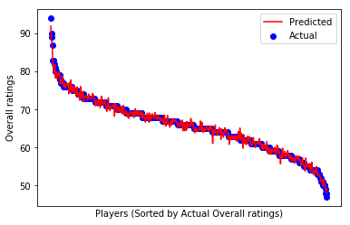

Step 7: 테스트 데이터로 모델 평가하기
워크숍 리소스
이제 훈련된 모델을 사용하여 테스트 데이터에 있는 선수들의 종합 능력치를 예측해보겠습니다. 훈련 데이터와 동일한 방식으로 x_test와 y_test를 생성합니다.
model.predict()는 예측 결과 목록을 생성합니다. 예측된 결과와 실제 종합 능력치를 비교해봅시다.
# 목표값(종합 능력치)을 기준으로 테스트 데이터를 정렬
test_data = test_data.sort_values([target], ascending=False)
x_test = test_data[features]
y_test = test_data[target]
# 예측된 결과 생성
y_pred = model.predict(x_test)
# 예측된 종합 능력치 열을 테스트 데이터에 추가
test_data['Predicted Overall'] = y_pred.copy()
# 예측 차이 비율을 계산하여 테스트 데이터에 추가
difference = (y_pred - y_test) / y_test * 100
test_data['Difference (%)'] = difference
# 결과 출력
test_data[["Name", "Nationality", "Club", "Overall", "Predicted Overall", "Difference (%)"]]
| Name | Nationality | Club | Overall | Predicted Overall | Difference (%) | |
|---|---|---|---|---|---|---|
| 1 | Cristiano Ronaldo | Portugal | Juventus | 94 | 91.973701 | -2.155638 |
| 10 | R. Lewandowski | Poland | FC Bayern München | 90 | 88.135513 | -2.071652 |
| 23 | S. Agüero | Argentina | Manchester City | 89 | 87.807637 | -1.339733 |
| 48 | C. Immobile | Italy | Lazio | 87 | 85.933234 | -1.226168 |
| 159 | Louri Beretta | Brazil | Atlético Mineiro | 83 | 81.583941 | -1.706096 |
| 193 | Rodrigo | Spain | Valencia CF | 83 | 81.784946 | -1.463921 |
| 179 | S. Gnabry | Germany | FC Bayern München | 83 | 79.978980 | -3.639783 |
| 315 | David Villa | Spain | New York City FC | 82 | 81.259066 | -0.903578 |
| 362 | Paco Alcácer | Spain | Borussia Dortmund | 81 | 81.836532 | 1.032756 |
| 518 | Alexandre Pato | Brazil | Tianjin Quanjian FC | 80 | 78.322831 | -2.096461 |
| 499 | L. de Jong | Netherlands | PSV | 80 | 79.993062 | -0.008672 |
| 523 | K. Gameiro | France | Valencia CF | 80 | 79.130702 | -1.086622 |
| 721 | B. Yılmaz | Turkey | Trabzonspor | 79 | 78.092396 | -1.148866 |
| 693 | S. Jovetić | Montenegro | AS Monaco | 79 | 79.353044 | 0.446891 |
| 591 | L. Alario | Argentina | Bayer 04 Leverkusen | 79 | 79.066446 | 0.084109 |
| 569 | André Silva | Portugal | Sevilla FC | 79 | 79.925229 | 1.171175 |
| 588 | M. Philipp | Germany | Borussia Dortmund | 79 | 78.962674 | -0.047248 |
| 561 | L. Martínez | Argentina | Inter | 79 | 79.411940 | 0.521443 |
| 874 | A. Dzyuba | Russia | NaN | 78 | 76.855093 | -1.467829 |
| 825 | S. García | Uruguay | Godoy Cruz | 78 | 77.375588 | -0.800528 |
| 909 | V. Germain | France | Olympique de Marseille | 77 | 77.509005 | 0.661045 |
| 1095 | N. Jørgensen | Denmark | Feyenoord | 77 | 76.745918 | -0.329976 |
| 992 | J. Sand | Argentina | Deportivo Cali | 77 | 78.886169 | 2.449570 |
| 1137 | Rubén Castro | Spain | UD Las Palmas | 77 | 77.797984 | 1.036343 |
| 895 | M. Harnik | Austria | SV Werder Bremen | 77 | 76.926679 | -0.095222 |
| 1413 | Alan Carvalho | Brazil | Guangzhou Evergrande Taobao FC | 76 | 75.922866 | -0.101492 |
| 1327 | K. Dolberg | Denmark | Ajax | 76 | 76.060831 | 0.080041 |
| 1496 | F. Montero | Colombia | Sporting CP | 76 | 77.017187 | 1.338404 |
| 1240 | I. Popov | Bulgaria | Spartak Moscow | 76 | 75.734350 | -0.349540 |
| 1357 | I. Slimani | Algeria | Fenerbahçe SK | 76 | 76.494507 | 0.650667 |
| ... | ... | ... | ... | ... | ... | ... |
| 17484 | J. Lankester | England | Ipswich Town | 54 | 56.121884 | 3.929415 |
| 17469 | J. Gallagher | Republic of Ireland | Atlanta United | 54 | 54.692444 | 1.282304 |
| 17501 | M. Saavedra | Chile | Audax Italiano | 54 | 54.137463 | 0.254561 |
| 17361 | E. McKeown | England | Colchester United | 54 | 52.796085 | -2.229473 |
| 17399 | Mao Haoyu | China PR | Tianjin TEDA FC | 54 | 53.964477 | -0.065783 |
| 17313 | M. Howard | England | Preston North End | 54 | 53.339370 | -1.223389 |
| 17355 | V. Barbero | Argentina | Belgrano de Córdoba | 54 | 54.011344 | 0.021008 |
| 17422 | Y. Ogaki | Japan | Nagoya Grampus | 54 | 54.041024 | 0.075970 |
| 17447 | Xie Weijun | China PR | Tianjin TEDA FC | 54 | 53.452376 | -1.014118 |
| 17367 | T. Lauritsen | Norway | Odds BK | 54 | 54.944641 | 1.749336 |
| 17482 | F. Al Birekan | Saudi Arabia | Al Nassr | 54 | 52.727175 | -2.357084 |
| 17609 | S. Jamieson | Scotland | St. Mirren | 53 | 53.509650 | 0.961604 |
| 17716 | M. Knox | Scotland | Livingston FC | 53 | 52.826053 | -0.328201 |
| 17578 | Lei Wenjie | China PR | Shanghai SIPG FC | 53 | 52.770581 | -0.432867 |
| 17665 | J. Smylie | Australia | Central Coast Mariners | 53 | 52.469974 | -1.000049 |
| 17611 | Felipe Ferreyra | Brazil | Curicó Unido | 53 | 52.861431 | -0.261451 |
| 17765 | A. Georgiou | Cyprus | Stevenage | 52 | 52.167786 | 0.322665 |
| 17757 | L. Smyth | Northern Ireland | Stevenage | 52 | 51.999942 | -0.000111 |
| 17923 | A. Reghba | Republic of Ireland | Bohemian FC | 51 | 51.075501 | 0.148041 |
| 17956 | C. Murphy | Republic of Ireland | Cork City | 51 | 51.731985 | 1.435265 |
| 17971 | M. Najjar | Australia | Melbourne City FC | 51 | 51.035541 | 0.069688 |
| 18013 | W. Møller | Denmark | Esbjerg fB | 51 | 50.796960 | -0.398118 |
| 18062 | Gao Dalun | China PR | Jiangsu Suning FC | 50 | 49.677371 | -0.645259 |
| 18094 | M. Al Dhafeeri | Saudi Arabia | Al Batin | 50 | 51.553964 | 3.107928 |
| 18063 | R. Hackett-Fairchild | England | Charlton Athletic | 50 | 50.140762 | 0.281524 |
| 18028 | D. Asonganyi | England | Milton Keynes Dons | 50 | 50.349896 | 0.699792 |
| 18140 | K. Hawley | England | Morecambe | 49 | 49.787332 | 1.606799 |
| 18166 | N. Ayéva | Sweden | Örebro SK | 48 | 48.802935 | 1.672781 |
| 18177 | R. Roache | Republic of Ireland | Blackpool | 48 | 49.226015 | 2.554197 |
| 18200 | J. Young | Scotland | Swindon Town | 47 | 48.019387 | 2.168908 |
538 열 × 6 칸
놀랍지 않나요? 이제 여러분이 만든 이 모델을 사용하면 전 세계 어떤 축구 선수의 종합 능력치도 예측할 수 있습니다!
이제 결과를 시각화하는 작업을 해보겠습니다.
# 결과 시각화
plt.scatter(range(0,y_test.shape[0]), y_test, color='blue', label="Actual")
plt.plot(range(0,y_test.shape[0]), y_pred, color='red', label="Predicted")
# 눈금, 라벨, 범례 추가
plt.xticks(())
plt.xlabel("Players (Sorted by Actual Overall ratings)")
plt.ylabel("Overall ratings")
plt.legend(loc='upper right')
plt.show()
